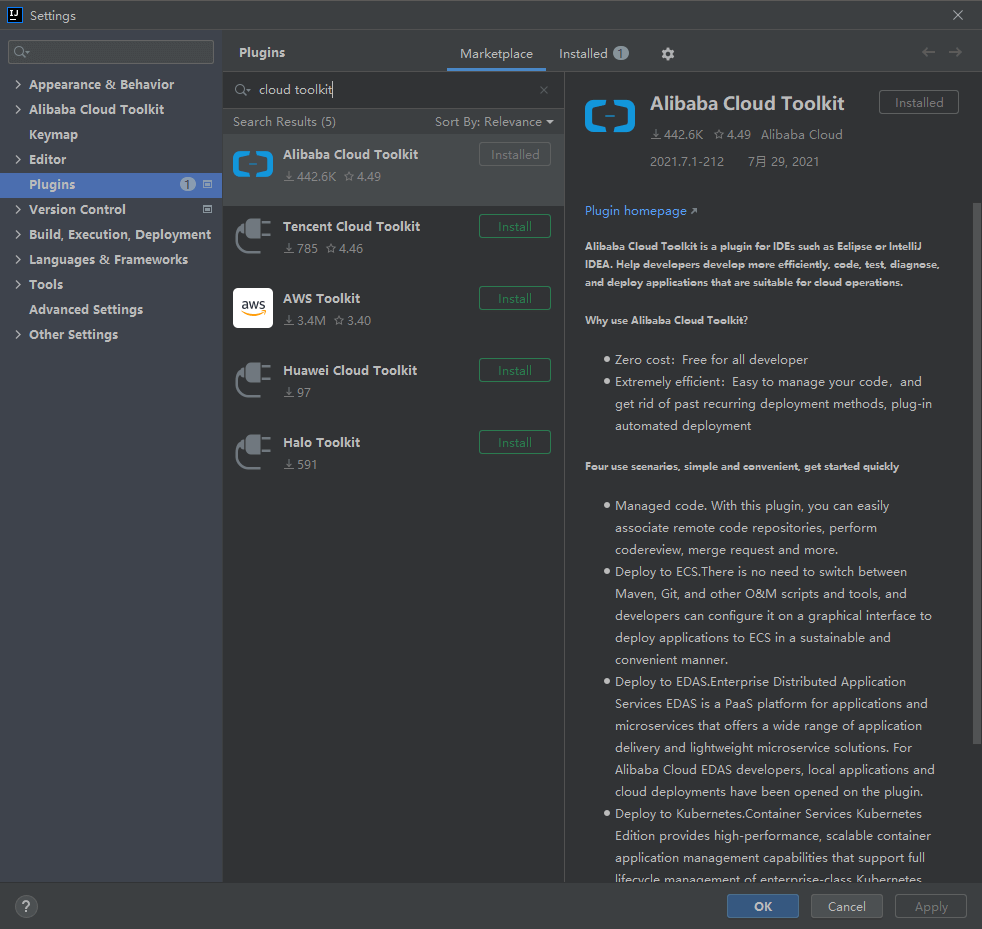
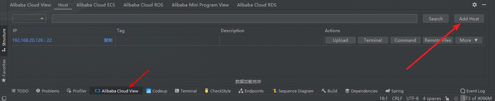
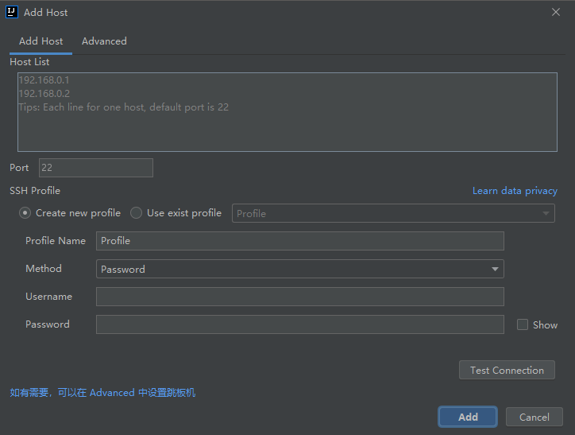
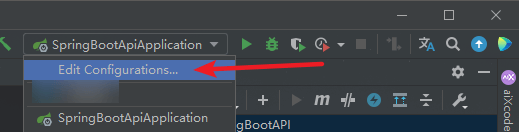
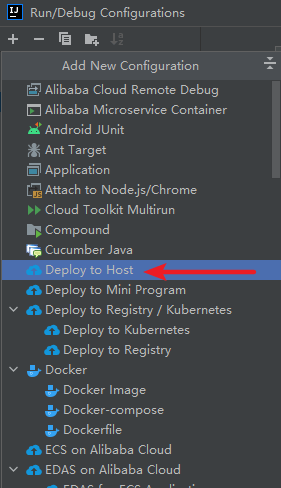
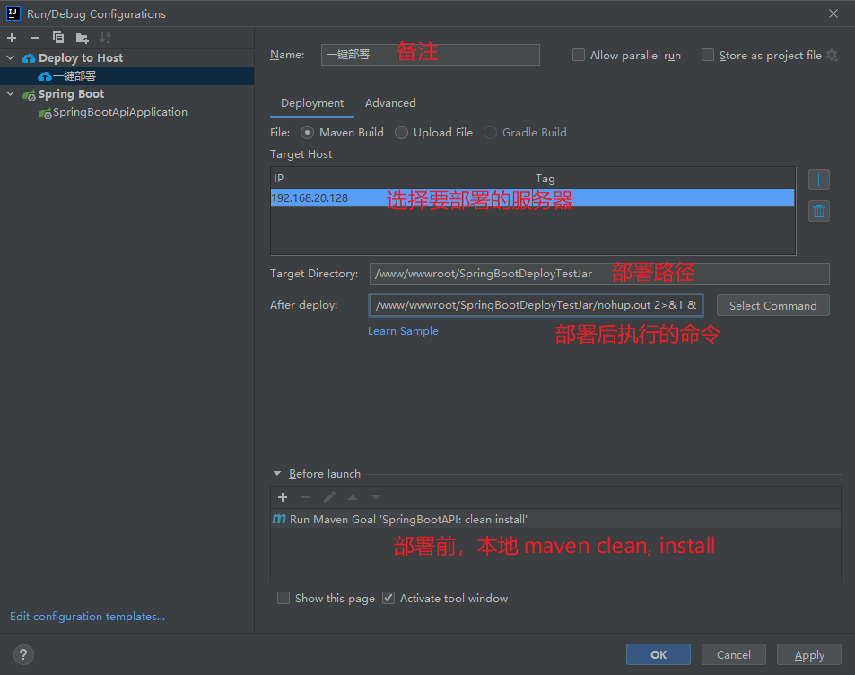
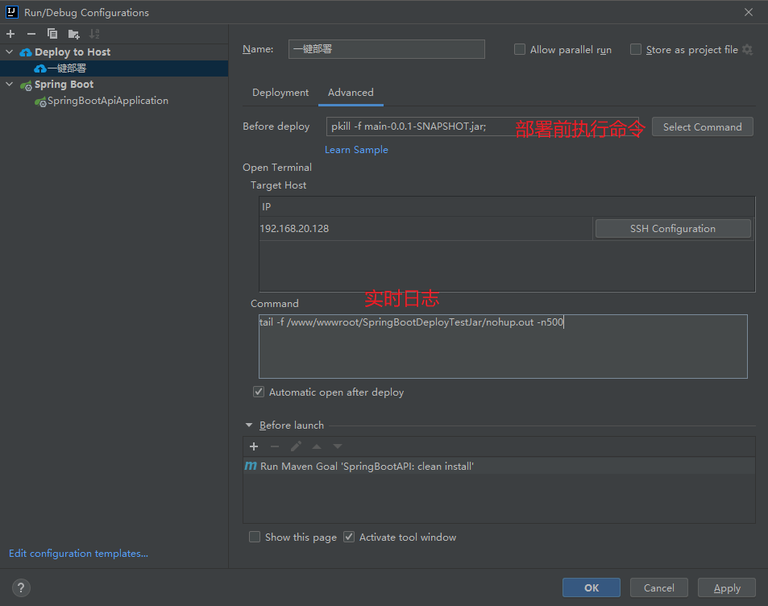
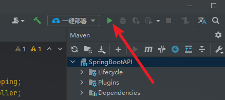
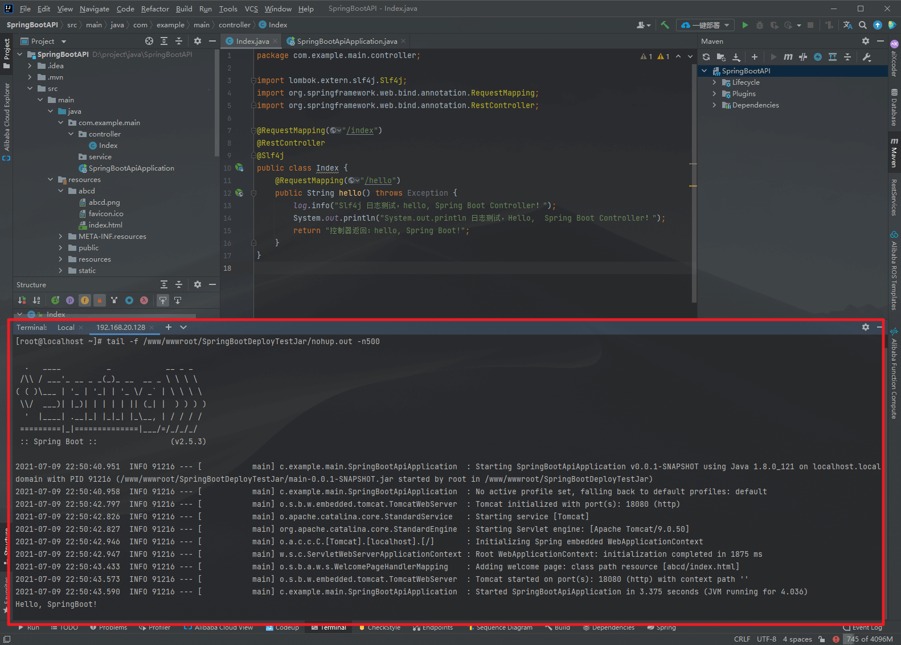

IDEA 使用 Alibaba Cloud Toolkit 插件一键部署 Spring Boot 项目
目录
Cloud Toolkit 帮助开发者将本地应用程序一键部署到任意服务器。 修改完代码后，无需重复「打包-上传-登录服务器-替换-部署-重启」的繁琐流程。
内置终端 Terminal：在 IDE 内，开发者可通过内置终端 Terminal 快速登录远程服务器，减少频繁切换的烦恼。 不仅支持阿里云服务器 ECS，也可以用于所有支持标准 SSH 协议的机器。
文件上传：Cloud Toolkit 帮助开发者在 IDE 内，一键将本地或远程 URL 文件上传至服务器指定目录。 简化繁琐的上传环节，无需各种 FTP、SCP 工具频繁切换。 更为重要的是，文件上传完毕后，还支持文件解压缩、程序启动等命令执行。
cloud toolkit 官网：https://www.aliyun.com/product/cloudtoolkit
一、安装 Alibaba Cloud Toolkit
-
确保 IntelliJ IDEA 在 2018.1 或更高版本；
-
打开 Settings - Plugins 搜索安装 Alibaba Cloud Toolkit；
-
如果迟迟安装不上，可以试试设置一下 IDEA socks 代理或者去它的官网找离线安装包；

二、配置
2.1、添加远程服务器
在 idea 底部有一个 tab 是 Alibaba Cloud View ，右上角 Add Host

输入服务器的 IP 及 SSH 连接信息，我使用的是账号密码式。

Edit Configurations

选择 Deploy to Host

2.2、添加详细配置


下面是上图添加详细配置时用到的命令：
# 部署路径（ Target Directory ）
/www/wwwroot/SpringBootDeployTestJar
# 部署前执行命令（）
pkill -f main-0.0.1-SNAPSHOT.jar;
# 部署后执行命令 （ After deploy ）
nohup java -jar /www/wwwroot/SpringBootDeployTestJar/main-0.0.1-SNAPSHOT.jar --server.port=18080> /www/wwwroot/SpringBootDeployTestJar/nohup.out 2>&1 &
# 实时日志
tail -f /www/wwwroot/SpringBootDeployTestJar/nohup.out -n500
填写完成后 Apply 。
三、一键部署
切换到一键部署，run。

此时 idea 会自动连接上服务器的 shell ，使用上面配置的命令查看实时日志。
